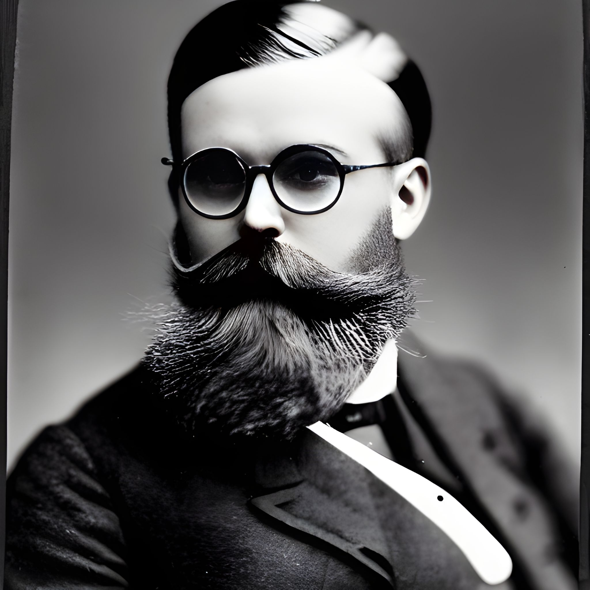

FRH New Player Packet
Edgar Von Haupt's Letter
The most natural front door into FRH is still a personal invitation: one earnest man, one hidden chapter house, and the suspicion that the world is larger than it appears.
This is the campaign's diegetic invitation. It is useful not only because it sets the mystery in motion, but because it reveals the emotional posture of the game: curiosity, secrecy, trust, scholarship, danger, and the sense that old things may still be waiting for the right people to notice them.
Want a little more context on the names behind the letter? Open the Chapter-House People Appendix.
Edgar Von Haupt
1666 Fila de Horca Blvd.
Cloudburg, Colorado


April 20th, 1923
Dear Friend:
I know this letter comes as a surprise. Let me assure you that I am writing to you as one of a select few. I have a proposal for you that I know you will be most interested to hear.
Let me first explain that I am a trance medium and I was led by occult knowledge to contact you. I am confident that you will keep the following story private even if you do not accept the proposal.
In January of 1921, I purchased a lovely house in Cloudburg as both a home and an office. My talents told me this house would be very conductive to seances. It was on January 24th that I had a most vivid dream. In my dream, I was sitting at a table with a number of mediaeval knights. Their aura in the dream was one of helpfulness. As I looked down at the table I saw a list of names with addresses written in my own hand. When I awoke from the dream, I was at my desk and I had just written out the list I had seen in my dream. There was also a map.
Your name and address were on the list. I believe you are one who can assist me in a great adventure.
I know you wish to know more and let me share the next chapter of my story. The map turned out to be a map of my basement but the map showed sub-levels below the current level. I spent the next month clearing the basement when I found a bricked-over doorway. Taking a sledgehammer I smashed open the door and entered a sub-basement. Within lay a dust covered room of secrets. I felt like Carter opening Tutankhamun's tomb.
The artefacts in the tomb were beyond my ability to investigate. However, I know with my deepest soul that these are secrets for the ages and must be handled with great care of security. It was with this in mind that I used my occult powers to lead me to those I could trust. One such man is Dr. David Blunth of Isla Oro University Department Of History.
Led by my visions, I brought Dr. Blunth a scroll from a cache in the first-level sub basement. My occult powers served me well as Blunth was amazed at the scroll and asked how I knew to bring that particular one. I explained my powers and we started working on translating the scroll.
Translating turned out to be quite difficult. While Blunth was convinced the scroll was in Thullish, an ancient language only Blunth and a handful of other scholars know, it made no sense. It was at this juncture that we determined the scroll must be encoded. We knew we needed a mathematician but my occult sense told me we could not trust one as I had trusted Blunth and I now am trusting you.
With the help of Dr. Jacob Rosenthal we broke the code of the scroll. Rosenthal believed we were working with a scroll from Italy as the Thullish was written in Greek script. He believed it was a simple replacement cipher on top of a more complex polyalphabetic cipher of the Greek.
The contents of the scroll are astounding. They speak of an ancient group called "The Followers of the Right Hand" or the FRH. We call this scroll the Founders' Scroll as the first line includes the term "founders". The scroll revealed that my house on Fila de Horca had been a chapter house or safe house of the FRH. It had been closed for over 40 years.
Reading further, the scroll told of struggles against the supernatural - monsters, ghosts, possessing spirits. Blunth and I know firsthand of the reality of the supernatural and were made cautious.
Further study of the scroll is needed as is cataloguing of the various books, scrolls, and artefacts. The artefacts include such items as jars with three-eyed frogs, unremarkable rosaries, pieces of bones in phials, and other odd items.
Dr. Blunth and I intend to take up the mission of the FRH and we want you to join. I know you are trustworthy as I was given your name and address from the cosmos. Please keep this correspondence safe and please destroy it if you choose not to participate.
While this letter contains incredible claims, I know you know in your heart that this is not a prank or the work of a crank. At least take the time to visit Cloudburg and talk to us and see what there is in the sub basement.
From my study in Cloudburg I maintain correspondence with scholars, explorers, and occult investigators across the world. Strange rumors, troubling letters, and occasionally unsettling visions reach me from many sources. When something demands investigation, I hope you will consider acting as trusted agents to learn the truth.
I look forward to your reply.
Warmly,
Edgar Von Haupt
Psychic Medium